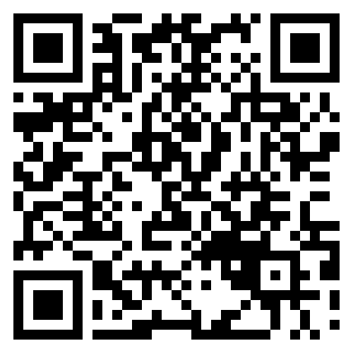

사이트 열기 ↗ 시뮬레이션을 통해 처마를 보는 관점을 바꾸다 「처마, 빛이 내려오는 통로」는 민가·사찰·성문의 처마가 만드는 빛과 그림자를관찰하고 비교하는 체험형 전시 프로젝트입니다. 영상을 통해 처마의 역할을 이해하고,AR에서 시간과 날씨를 바꾸며 빛의 변화를 살펴봅니다. 전시에서 발견한 장면은 웹 아카이브로 이어져, 한옥을 바라보는 새로운 관찰 기준으로 남습니다. 김민재 조우성 ※ 프로젝트 내 일부 이미지들은 인공지능(AI)를 이용해 연출된 이미지입니다. 01 진행단계 빛을 보고, 직접 바꾸며 처마를 이해하다 프로젝션 인터랙션을 통해 시간에 따라 달라지는 빛과 그림자를 관찰하고, 태블릿 컨트롤러를 통해 원하는 장면과 조건을 직접 선택합니다. 이후 AR과 웹으로 탐색을 확장하며 처마의 구조와 차이를 이해합니다. 01 빛과 그림자의 변화를 만나다 프로젝터로 펼쳐지는 빛과 그림자의 움직임을 따라가며, 처마의 형태 에 따라 달라지는 빛의 깊이와 그림자의 경계를 관찰합니다 02 다양한 처마로 시선을 넓히다 태블릿 컨트롤러에서 원하는 건축물과 시점, 계절·날씨·시간을 선택 합니다. 선택한 조건에 따라 프로젝션 영상이 전환되며, 처마 아래의 빛과 그림자가 어떻게 달라지는지 직접 관찰합니다. 03 세 처마의 차이를 비교하다 AR에서 시간과 날씨를 직접 바꾸며 민가·사찰·성문의 처마를 비교 합니다.같은 조건에서도 다르게 나타나는 빛의 유입과 그림자의 경계를 관찰합니다. 04 처마의 구조를 살펴보다 웹의 3D 뷰어에서 처마를 회전하고 분해하며 각 부위를 살펴봅니다. 부위별 설명을 통해 눈앞에서 경험한 빛의 차이를 구조와 연결해 이 해합니다 02 상황분석 한국의 고궁과 역사 공간을 찾는 외국인 관람객에게 한옥은 매력적인 여행지입니다. 그러나 짧은 방문으로 경험하는 것은 특정 시간과 날씨의 한 장면입니다. 처마의 곡선은 기억에 남아도, 그 구조가 빛과 그늘을 어떻게 바꾸는지는 놓치기 쉽습니다. 전통 건축을 보는 것과 이해하는 것은 다릅니다 전통 건축에 대한 관심이 처마의 기능에 대한 이해로 이어지려면, 변화하는 빛을 직접 보고 비교할 수 있는경험이 필요합니다. 짧은 방문으로는 확인하기 어려운 빛의 변화 많은 외국인 관광객이 한국의 전통 공간을 방문하지만. 짧은 일정 안에 시간에 따라 달라지는처마 아래의 빛을 모두 경험하기 어렵습니다. 03 문제도출 처마의 형태는 보이지만, 빛과 그림자를 조절하는 작동은 놓치기 쉽습니다. 서로 다른 장소와 방문 조건 때문에 구조에 따른 차이를 비교하기 어렵습니다. 04 인사이트 같은 빛 아래에서도 처마마다 그림자의 경계는 달라집니다. 그 차이가 처마의 구조와 역할을 드러냅니다. 처마의 길이와 각도, 겹쳐진 구조는 빛이 들어오는 깊이와 그림자가 머무는 범위에 영향을 줍니다. 그림자를 같은 빛 아래에서 비교하면, 처마가 공간을 조절하는 방식을 더 분명하게 읽을 수 있습니다. 처마를 보여주는 것을 넘어, 처마가 만드는 환경을 발견하게 합니다. 05 타겟 설정 및 분석 주요 타겟은 한옥과 역사 공간에 관심이 있는 20~30대 외국인 자유여행객으로 시각적 경험과 자유로운 탐색을 선호하는 관람객입니다. 자신의 관심에 따라 탐색하는 자유여행객 외국인 여행객들은 자신의 관심에 따라 여행지를 탐색하고 방문하지만, 짧은 체류 시간과 낯선 건축 용어로 인해 전통 건축의 의미를 깊이 이해하기 어렵습니다. 06 컨셉 빛과 그림자로 다시 읽는 처마 처마를 빛과 그림자를 조절하는 구조로 바라보고, 시간과 날씨에 따른 변화를 통해 한옥의 공간적 아름다움을 경험합니다. 07 결론 인터랙션과 웹 아키이빙을 통해 관람객이 빛의 깊이와 그림자의 경계를 스스로 발견하도록 돕습니다. 이를 통해 한옥을 아름다운 외형에서 생활환경을 만드는 구조로 다시 바라보게 합니다. 서로 다른 처마는, 서로 다른 빛을 만듭니다. 08 디자인 서비스경험디자인 프로젝션과 AR 체험을 웹의 3D 뷰어·사진 아카이브로 연결합니다. 관람객이 관심과 속도에 맞춰 체험하도록 동선을 구성합니다. 인터페이스디자인 시뮬레이션과 사진 아카이브로 처마의 구조와 사례를 탐색합니다. 한·영 지원과 직관적인 조작으로 외국인 관람객의 이해를 돕습니다. 인터랙션디자인 프로젝션으로 빛과 그림자를 조작하며 경험하고, 모바일 AR에서 시간과 날씨를 바꾸며 세 처마의 차이를 비교합니다. 처마, 빛이 내려오는 통로 시뮬레이션을 통해 처마를 보는 관점을 바꾸다 「처마, 빛이 내려오는 통로」는 민가·사찰·성문의 처마가 만드는 빛과 그림자 를관찰하고 비교하는 체험형 전시 프로젝트입니다. 영상을 통해 처마의 역할을 이해하고,AR에서 시간과 날씨를 바꾸며 빛의 변화를 살펴봅니다. 전시에서 발견한 장면은 웹 아카이브로 이어져, 한옥을 바라보는 새로운 관찰 기준으로 남습니다. ※ 프로젝트 내 일부 이미지들은 인공지능(AI)를 이용해 연출된 이미지입니다. 김민재 조우성 01 진행단계 빛을 보고, 직접 바꾸며 처마를 이해하다 프로젝션 인터랙션을 통해 시간에 따라 달라지는 빛과 그림자를 관찰하고, 태블릿 컨트롤러를 통해 원하는 장면과 조건을 직접 선택합니다. 이후 AR과 웹으로 탐색을 확장하며 처마의 구조와 차이를 이해합니다. 02 상황분석 짧은 시간 안에 처마를 온전히 이해하기 어렵습니다 한국의 고궁과 역사 공간을 찾는 외국인 관람객에게 한옥은 매력적인 여행지 입니다.그러나 짧은 방문으로 경험하는 것은 특정 시간과 날씨의 한 장면입 니다. 짧은 방문으로는 처마 아래의 빛을 모두 경험하기 어렵습니다. 같은 조건에서 여러 처마를 비교하고, 살펴볼 수 있는 경험이 필요합니다. 03 문제도출 처마의 형태는 보이지만, 그 역할은 보이지 않습니다 처마의 형태는 보이지만, 빛과 그림자를 조절하는 작동은 관람객들이 놓치 기 쉽습니다.서로 다른 장소와 방문 조건 때문에 구조에 따른 차이를 비교 하기 어렵습니다. 한옥이 서로 다른 곳에 흩어져 있어 다양하게 둘러보기 힘듦 지역 분산 한정된 일정으로 인해 시간이나 날씨에 의한 체감에 한계가 있음 한정된 관찰 순간 눈앞의 빛 차이가 구조 때문인지 시간·방위·날씨 때문인지 알기 힘듦 통제되지 않는 조건 04 인사이트 같은 빛 아래에서도 처마마다 그림자는 달라집니다 처마의 길이와 각도, 겹쳐진 구조는 빛이 들어오는 깊이와 그림자가 머무는 범위에 영향을 줍니다. 그림자를 같은 빛 아래에서 비교하면, 처마가 공간을 조절하는 방식을 더 분명하게 읽을 수 있습니다. 처마를 보여주는 것을 넘어, 처마가 만드는 환경을 발견하게 합니다. 05 타겟설정 및 분석 자신의 관심에 따라 탐색하는 자유여행객 타겟은 한옥과 역사 공간에 관심이 있는 20~30대 외국인 여행객으로 시 각적 경험과 자유로운 탐색을 선호하는 관람객입니다. 06 컨셉 빛과 그림자로 다시 읽는 처마 처마를 빛과 그림자를 조절하는 구조로 바라보고, 시간과 날씨에 따른 변화 를 통해 한옥의 공간적 아름다움을 경험합니다. 프로젝션으로 시간과 계절에 따라 달라지는 빛과 그림자의 움직임을 관찰합니다. 태블릿 컨트롤러에서 장면·시점과 시간·계절·날씨를 선택해 빛의 변화를 직접 조작합니다. 조건에 따라 달라지는 빛의 깊이와 그림자의 경계를 비교하며 처마의 역할을 발견합니다. 07 결론 서로 다른 처마는, 서로 다른 빛을 만듭니다. 인터랙션과 웹 아키이빙을 통해 관람객이 빛의 깊이와 그림자의 경계를 스스로 발견하도록 돕습니다. 이를 통해 한옥을 아름다운 외형에서 생활 환경을 만드는 구조로 다시 바라보게 합니다. 08 디자인 서비스경험디자인 프로젝션과 AR 체험을 웹의 3D 뷰어·사진 아카이브로 연결합니다. 관람객 이 관심과 속도에 맞춰 체험하도록 동선을 구성합니다. 인터페이스디자인 시뮬레이션과 사진 아카이브로 처마의 구조와 사례를 탐색합니다. 한·영 지원과 직관적인 조작으로 외국인 관람객의 이해를 돕습니다. 인터랙션디자인 프로젝션으로 빛과 그림자를 조작하며 경험하고, 모바일 AR에서 시간과 날씨를 바꾸며 세 처마의 차이를 비교합니다.